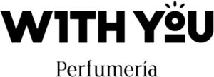

Trade Mark Journal No.2026/012 20 March 2026
WO0000001899777 (3)
Office of origin: United Arab Emirates
Date of International Registration:10 November 2025
Date of designation in the UK:
9 February 2026

The mark consists of the stylized wording “W1TH YOU” in bold, uppercase black letters, with the number '1' replacing the letter 'I'. In the word “YOU, ” the letter “O” is represented as a solid black circle featuring three short lines radiating outward above it, resembling a sunburst or spray effect, and a horizontal line positioned directly below the circle, giving the overall appearance of a stylized perfume spray nozzle. Below the wording “W1TH YOU” appears the word “Perfumería” in a smaller, elegant serif font.
Perfumería
- Class 3
- Non-medicated soaps; perfumes; essential oils; cosmetic creams; facial creams; non-medicated cosmetics; non-medicated body care preparations; make-up removing preparations; hair styling preparations; hair creams; shaving and after-shave preparations; lotions for cosmetic purposes; non-medicated toothpaste; deodorants and antiperspirants for personal use; household fragrances; fragrances for personal use; toiletries; non-medicated mouthwashes.
ARCHER ALLIANCE TRADING L.L.C